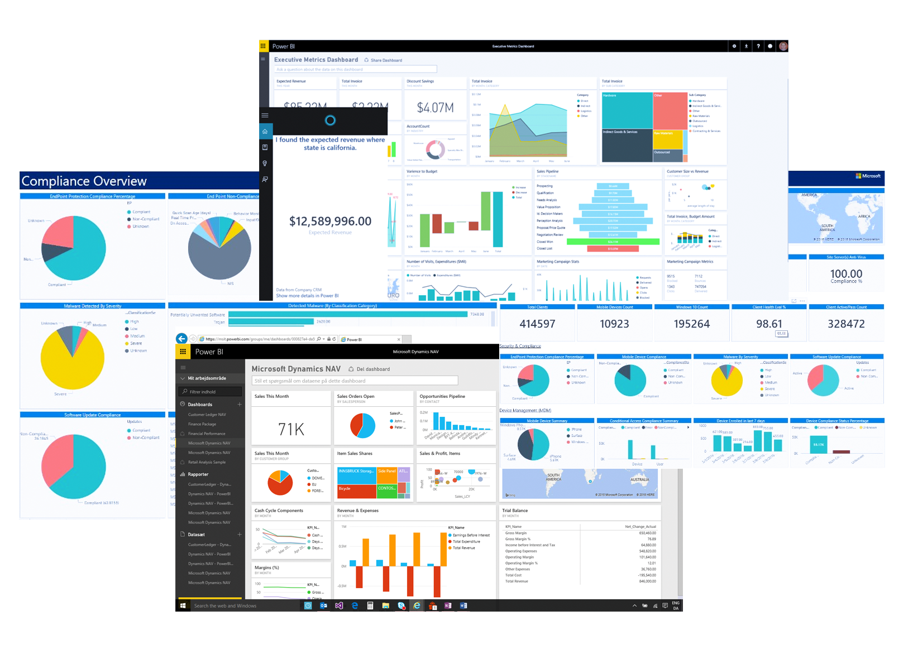
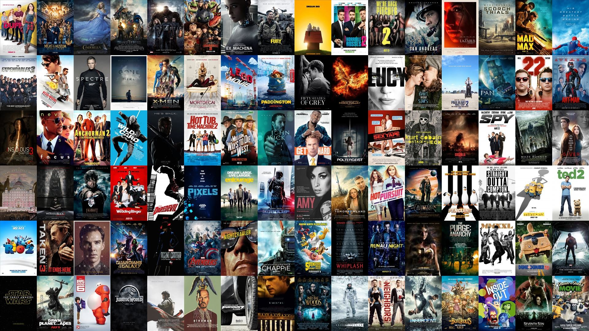
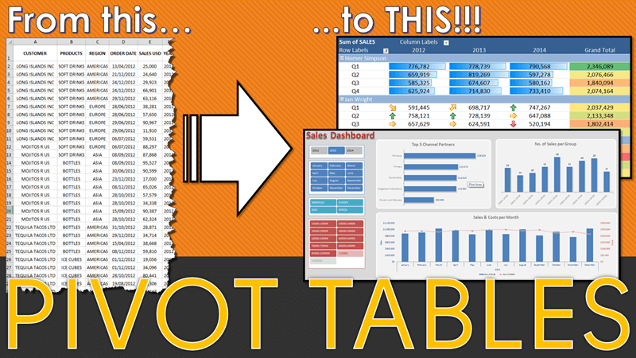

Embarking on the project as an eCommerce Database Analyst, I'm tasked with assisting in conveying a compelling narrative to potential investors. The objective is to utilize SQL for extracting and analyzing traffic and website performance data, creating a growth story that resonates with the CEO's vision. The focus is on showcasing the impact of marketing channel activities and website improvements, flexing analytical skills to assure investors of the company's serious commitment to data-driven strategies. The project revolves around not just extracting and analyzing data but effectively communicating a story of rapid growth and performance optimization to stakeholders.

Crafted a dynamic sales dashboard using Excel, comparing current and previous year revenues. Analyzed regional sales trends and identified top and bottom-performing products for quick decision-making. Visualized insights using bar charts and line graphs.

Embark on a BI journey—tracking KPIs, comparing regions, and finding high-value customers. Using Power BI Desktop, this project transforms raw data into an interactive dashboard, demonstrating data connection, DAX mastery, and optimization tools. Witness the fusion of analytics and storytelling, showcasing BI's power to empower organizations.

This project employs MySQL to analyze critical aspects of a movie retail business, aiding in the evaluation of a potential acquisition. Through tailored SQL queries, I uncover insights into store management, film inventory, customer demographics, and financial metrics. The analysis provides a clear, data-driven snapshot, showcasing my ability to use SQL for informed decision-making in the context of business acquisition within the movie retail industry.
Embark on a journey through my Python-driven data analysis project focused on a chain of retail and grocery stores. As a Data Analyst, I harnessed the power of Python, specifically leveraging the Numpy and Pandas libraries, to efficiently process and analyze vast datasets comprising over 2 million transactions.

Explore my proficiency in data analysis through diverse case studies, skillfully utilizing Excel Pivot Tables. Uncover insights into financial trends, market dynamics, and more. Witness the power of data-driven decision-making in this concise portfolio showcase.

Excel-based dashboard for quick insights into U.S. labor trends. Compare annual wages, employee distribution, and track trends through bar, pie, and line charts. A dynamic map chart highlights regions with higher average wages and employees per capita.